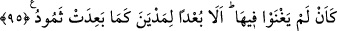

Yeryüzü çatlayıp onları içine çekti. Böylece hepsi yanarak öldü. İşte “yurtlarında”
şehirlerinde veya evlerinde “dizüstü çökekaldılar” bulundukları yere mıhlanıp kaldılar
ifadesinin anlattığı budur.
95. Sanki orada hiç yaşamamışlardı. İyi bilin ki Semûd kavmi (Allah’ın
rahmetinden) uzak olduğu gibi Medyen kavmi de uzak oldu.
“Sanki orada” memleketlerinde “hiç yaşamamışlardı” istedikleri gibi tasarrufta
bulunup oraya buraya gidip-gelen canlı varlıklar olarak yaşamamışlardı sanki. “İyi
bilin ki Semûd kavmi” Allah’ın rahmetinden “uzak olduğu gibi” onlar nasıl helâk
olduysa “Medyen kavmi de uzak oldu.” helâk olup gitti.
Şuayb (a.s.)’ın kavminin helâk olup gidişi Semûd kavmininkine benzetilmiştir. Çünkü
her iki kavim de -biraz önce belirttiğimiz üzere- korkunç gürültüden ibaret bulunan aynı
tür azap ile, yâni sayha ile helâk edilmişlerdir.
Âyette, kâfirler ile ehl-i hevânın dünyevî isteklerden kâm alıp hakkı ve hidâyeti
kabûle yanaşmayarak, rûhânî istîdadlarını bozduklarına ve haktan devamlı yüz
çevirmelerinin ve bâtılda bocalamalarının kendilerini hem sûreten hem de mânen helâke
götürdüğüne işâret edilmektedir. Sûreten helâk zaten açıkça görülüyor. Mânen helâk
olmalarına gelince onlar, Allah’ın himâyesinden ve O’nunla beraber güzel bir hayattan
uzaklaştırılıp Hak’tan ayrılığın esfel-i sâfilînine sürükleniyorlar. Ayrılık ateşinde hayat
ile ölüm arasında öylece kalıyorlar. Hayatlarından faydalanmadıkları için bir nevi
ölülere benzemiş oluyorlar.
Cebrail (a.s.)’ın o korkunç sesi onları helâk ettiği gibi Şuayb (a.s.)’ın nefhası/soluğu
da mü’minleri diriltmiştir. Çünkü peygamberlerin ve velilerin nefesleri, hayat verme
konusunda İsrâfil’in nefhasına benzer. Yeter ki nefhaya mazhar olan elverişli ve uygun
olsun.
Mesnevî’de der ki:
İsrâfil (a.s.), günün birinde ilâhî emre uyarak sûrunu üfürür,
Yüzlerce senelerden beri çürümüş cesedlere can verir.
Şunu bilmiş ol ki velîler, vaktin İsrâfilleridir.
Ölüler, onların gönül nağmeleri ile dirilirler
Onların seslerini duyunca, her ölünün canı,
Kefene bürünmüş bir halde, ten mezarından sıçrar, çıkar
Zü’l-celâl’in has kullarından baş çeker, uzaklaşırsan,
Bil ki, onlar senin varlığından bıkmışlardır, usanmışlardır.
Onların kehrübâsı vardır; o kehrübâyı meydana çıkarırlarsa,